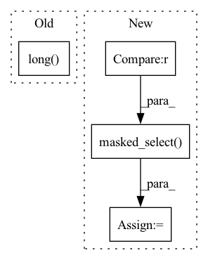

Pattern ID :41814

Before Change
r = pad_sequence(r, padding_value=pad_val).squeeze()
mask = (q != pad_val)
q, r = q * mask.long(), r * mask.long()
delta = one_hot(q[1:], self.num_q)
target = r[1:]
After Change
print(len(responses[train_idx:]))
print(np.max([arr.shape for arr in responses[train_idx:]]))
test_masks = (test_questions != pad_val)
test_questions, test_responses = \
test_questions * test_masks.long(), \
test_responses * test_masks.long()
test_delta = one_hot(test_questions[1:], self.num_q)
test_targets = test_responses[1:]
test_questions = test_questions[:-1]
test_responses = test_responses[:-1]
test_masks = test_masks[:-1]
test_targets = torch.masked_select(test_targets, test_masks)
opt = Adam(self.parameters(), learning_rate)
aucs = []
loss_means = []
for i in range(1, num_epochs):
loss_mean = []
for _ in range(train_idx // batch_size):
random_indices = np.random.choice(
train_idx, batch_size, replace=False
)
q = train_questions[random_indices]
r = train_responses[random_indices]
m = train_masks[random_indices]
d = train_deltas[random_indices]
t = train_targets[random_indices]
// q = [LongTensor(arr).unsqueeze(-1) for arr in q]
// r = [LongTensor(arr).unsqueeze(-1) for arr in r]
// q = pad_sequence(q, padding_value=pad_val).squeeze()
// r = pad_sequence(r, padding_value=pad_val).squeeze()
// mask = (q != pad_val)
// q, r = q * mask.long(), r * mask.long()
// delta = one_hot(q[1:], self.num_q)
// target = r[1:]
// q = q[:-1]
// r = r[:-1]
// mask = mask[:-1]
self.train()
y = self(q, r)
opt.zero_grad()
loss = torch.masked_select(
binary_cross_entropy((y * d).sum(-1), t.float()), m
).mean()
loss.backward()
opt.step()
loss_mean.append(loss.detach().numpy())
self.eval()
test_y = (self(test_questions, test_responses) * test_delta)\
.sum(-1)
test_y = torch.masked_select(test_y, test_masks).detach()
fpr, tpr, thresholds = metrics.roc_curve(
test_targets.numpy(), test_y.numpy()
In pattern: SUPERPATTERN
Frequency: 3
Non-data size: 4
Instances
Fragment ID: 117232200
Project Name: hcnoh/knowledge-tracing-collection-pytorch
Commit Name: 02fafdf350373b54da7e953cb2177109fba73d7f
Time: 2021-03-15
Author: rhc0624@gmail.com
File Name: models/dkt.py
M Class Name: DKT
N Class Name: DKT
M Method Name: train_model(5)
N Method Name: train_model(5)
M Parent Class: Module
N Parent Class: Module
M File Name: models/dkt.py
N File Name: models/dkt.py
M Start Line: 47
M End Line: 131
N Start Line: 47
N End Line: 151
'>
Before Change
x = x.to(pl_module.device)
with torch.no_grad():
pl_module.eval()
out = pl_module(text, x, return_loss=False).long()
print(out.shape)
text_seq = out[:, :self.text_seq_len,:]
print(text_seq.shape)
img_seq = out[:, self.text_seq_len:,:]
After Change
//generate sample without image
sample_text = text[:1]
token_list = sample_text.masked_select(sample_text != 0).tolist()
decoded_text = self.tokenizer.decode(token_list)
x_gen = pl_module.generate_images(text[:1], filter_thres=0.9) // topk sampling at 0.9
'>
Fragment ID: 117232202
Project Name: tgisaturday/dalle-lightning
Commit Name: 2581c994940a3ccb5d297681ac847d543a1a82bd
Time: 2021-07-26
Author: jamesk1228@gmail.com
File Name: pl_dalle/callbacks.py
M Class Name: DalleImageSampler
N Class Name: DalleImageSampler
M Method Name: on_train_batch_end(7)
N Method Name: on_train_batch_end(7)
M Parent Class: Callback
N Parent Class: Callback
M File Name: pl_dalle/callbacks.py
N File Name: pl_dalle/callbacks.py
M Start Line: 206
M End Line: 216
N Start Line: 206
N End Line: 261
'>
Before Change
x = x.to(pl_module.device)
with torch.no_grad():
pl_module.eval()
out = pl_module(text, x, return_loss=False).long()
text_seq = out[:, :self.text_seq_len]
img_seq = out[:, -self.image_seq_len:]
xrec = pl_module.vae.decode(img_seq, feed_seq=True)
pl_module.train()
After Change
//generate sample without image
sample_text = text[:1]
token_list = sample_text.masked_select(sample_text != 0).tolist()
decoded_text = self.tokenizer.decode(token_list)
x_gen = pl_module.generate_images(text[:1], filter_thres=0.9) // topk sampling at 0.9
'>
Fragment ID: 117232196
Project Name: tgisaturday/dalle-lightning
Commit Name: 2581c994940a3ccb5d297681ac847d543a1a82bd
Time: 2021-07-26
Author: jamesk1228@gmail.com
File Name: pl_dalle/callbacks.py
M Class Name: DalleImageSampler
N Class Name: DalleImageSampler
M Method Name: on_validation_batch_end(7)
N Method Name: on_validation_batch_end(7)
M Parent Class: Callback
N Parent Class: Callback
M File Name: pl_dalle/callbacks.py
N File Name: pl_dalle/callbacks.py
M Start Line: 263
M End Line: 270
N Start Line: 276
N End Line: 331